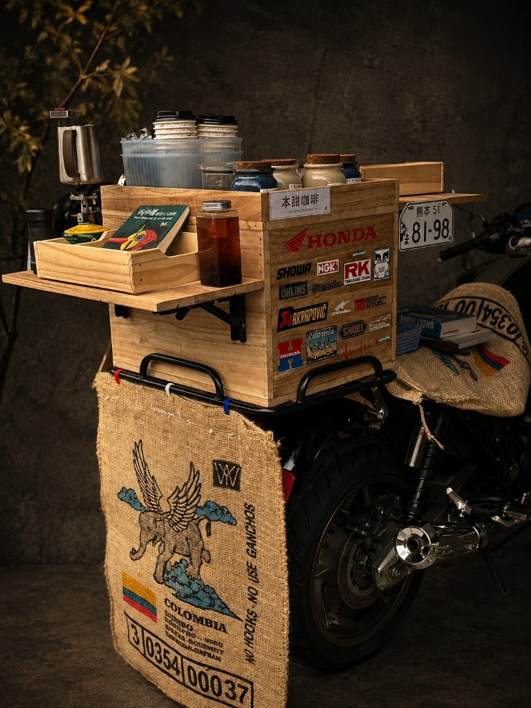

產地到杯中・嚴選自烘
堅持小批次烘焙，精準掌握脫水、梅納反應與發展期，呈現產區最真實的甜感與香氣。

ABOUT & MOBILE CONCEPT
堅持小批次烘焙，精準掌握脫水、梅納反應與發展期，呈現產區最真實的甜感與香氣。

不被水泥牆束縛。現身於週末市集、街角快閃、企業家庭日與戶外活動，哪裡需要好咖啡，我們就騎向哪裡。
ROASTING PROFILES
可依個人口感偏好指定客製焙度，四段曲線對應不同甜感與醇厚度。
Light
明亮花果酸香、細緻茶感、尾韻清甜
Medium-Light
柑橘與核果平衡、柔和甜感
Medium-Dark
焦糖、堅果與可可風味、醇厚滑順
Dark
濃郁煙燻、黑巧克力、低酸度厚實感
SEASONAL BEAN MENU
秉持「產地到杯中」的堅持，每批生豆皆經手工挑豆，採小批次新鮮烘焙。除了推薦焙度外，亦可依個人口感偏好指定客製焙度。
Ethiopia
Ethiopia Yirgacheffe Worka
入口帶有奔放的花果香氣，日曬處理法賦予其明亮且圓潤的莓果甜感，餘韻宛如一杯清雅的果香紅茶。
適合沖煮：手沖濾杯 (V60)、冰滴冷萃
Colombia
Colombia Cauca Finca El Paraiso
層次立體且辨識度極高，發酵帶出柔滑的乳酸甜感與飽滿蜜桃香氣，乾淨度與甜感達到絕佳平衡。
適合沖煮：手沖濾杯 (Kono/Kalita)、冷萃
Guatemala
Guatemala Antigua La Flor
火山土壤孕育的經典厚實風味，前段帶有柔和的柑橘果酸，中後段轉化為濃郁堅果與焦糖香，口感絲滑黏稠。
適合沖煮：手沖濾杯、愛樂壓、美式摩卡壺
Indonesia
Indonesia Sumatra Gayo TP
極致低酸度、醇厚度極高。重機旅人般的沉穩風範，深焙焦香中釋放天然甘甜與厚實的木質草本尾韻。
適合沖煮：法壓壺、虹吸壺、義式濃縮
House Blend
Ben Sweet “The Roamer” Blend
專為穿梭市集與公路日常打造的全能配方。平衡了果香甜感與厚實油脂，單喝純粹、做成奶咖更添堅果甜香。
適合沖煮：手沖、義式濃縮、掛耳包
PRODUCTS MENU
下單後排單新鮮烘焙，提供研磨粗細客製服務。

半磅裝（227g / 單向排氣閥密封袋），支援客製烘焙度。

單包隨行裝（11g）／ 盒裝（10包入）。單包裝隨行便利沖煮、精緻禮盒裝。

隨行玻璃瓶裝（350ml / 需冷藏）。低溫慢萃帶出醇厚發酵甘甜。
EVENTS & CATERING
週末市集出攤、街角快閃。即時據點更新於社群。
企業家庭日、商務會議、新品發表會咖啡吧外包。
私人派對與婚禮外燴手沖服務，把烘焙現場騎到你的場合。